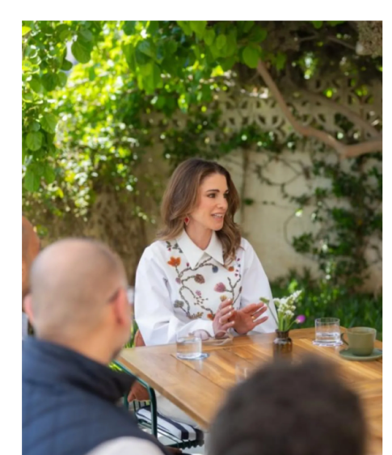
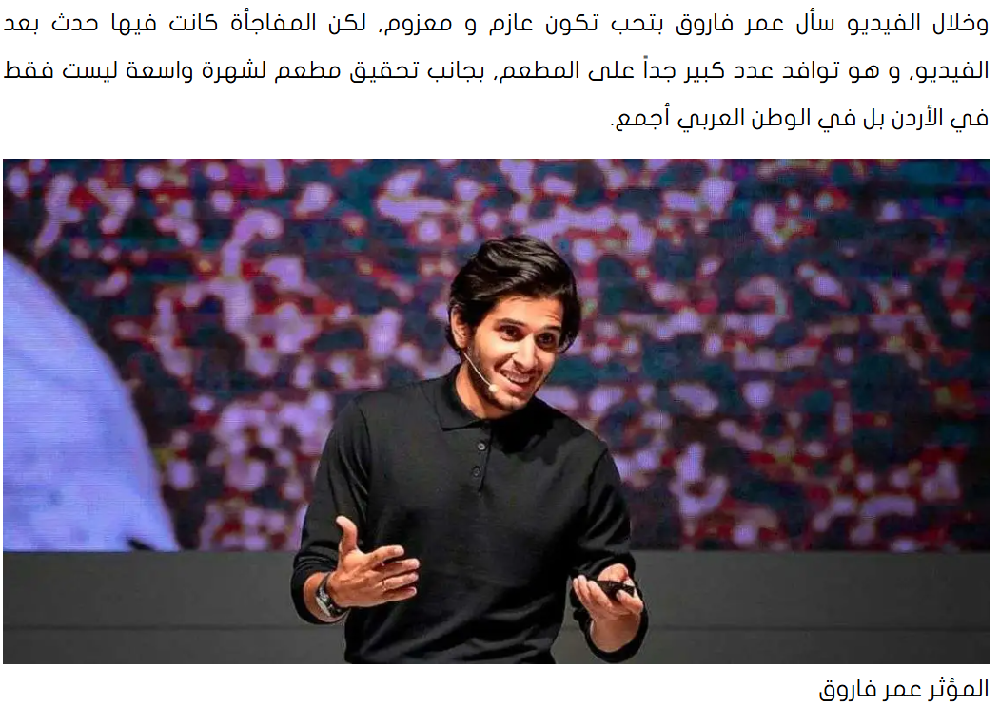
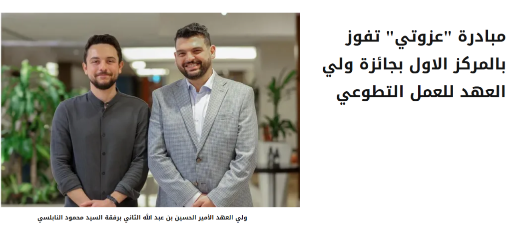
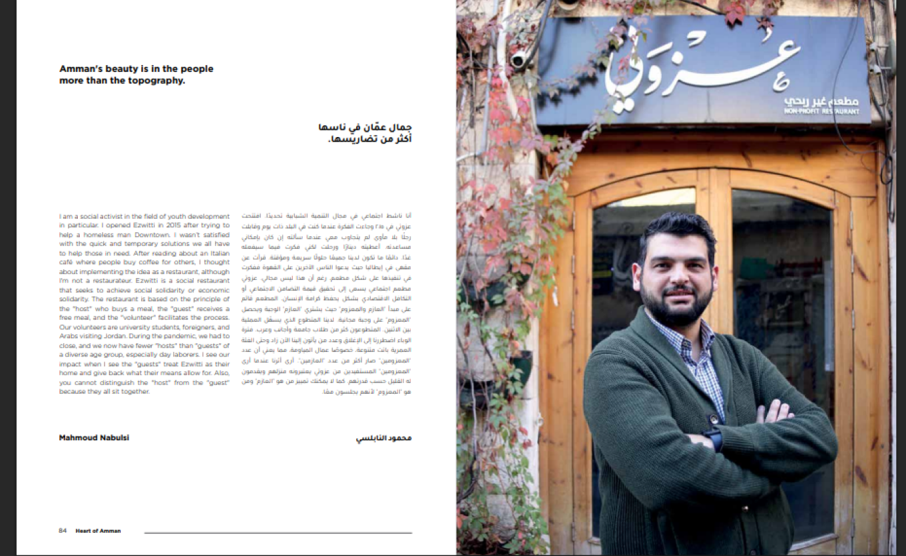
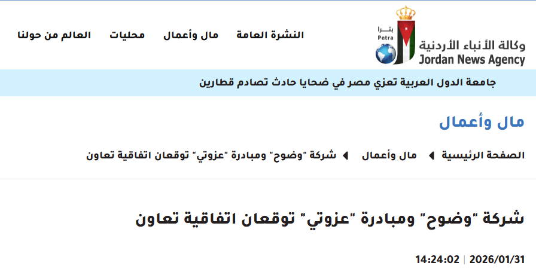
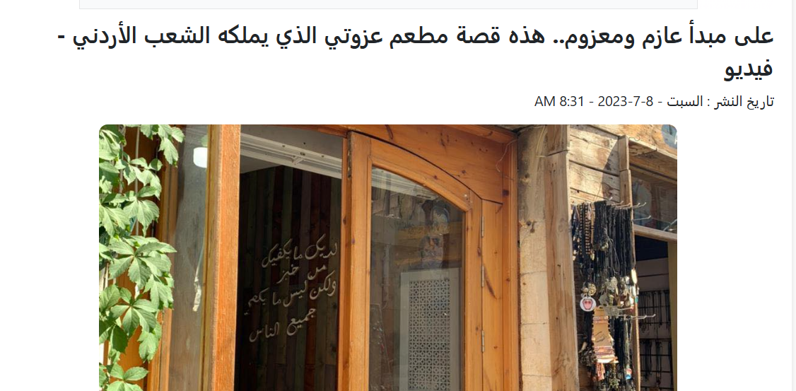
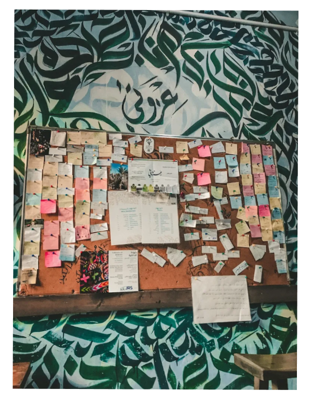

عزوتي في التغطيات الإعلامية
تعرّف على التغطية الإعلامية المنشورة عن عزوتي. الصورة المستخدمة لواجهة المطعم توضيحية وليست صورة المقال الأصلي.
من قلب عمّان، وصلت حكايتنا لقلوب الناس وشاشات العالم. نوثق هنا مسيرة التكافل الاجتماعي لمطعم عزوتي من خلال التغطيات الإعلامية، الزيارات الملكية والشخصيات المؤثرة، وأثرنا المستمر في المجتمع.
تعرّف على التغطية الإعلامية المنشورة عن عزوتي. الصورة المستخدمة لواجهة المطعم توضيحية وليست صورة المقال الأصلي.

زيارة ملكية كريمة للاطلاع على مبادرة عزوتي ودعم الشباب الأردني في تعزيز التكافل الاجتماعي، وتجربة فريدة تؤكد على ترسيخ كرامة الإنسان وتلاحم المجتمع.
تسلط التغطية الضوء على مبادرة عزوتي ومبدأ عازم ومعزوم، وتشير إلى تكريم القائمين عليها. الصورة المعروضة توضيحية لواجهة المطعم.

حلقة ملهمة ضمن تجاربه الإنسانية زار فيها مطعم عزوتي في عمّان، موثقاً تجربة جدار الخير وناقلاً رسالة التكافل الأردنية لملايين المتابعين حول العالم العربي.

تتويج مستحق للمبادرة بالمركز الأول كأفضل مشروع تطوعي أردني على مستوى الأفراد، تقديراً لأثرها المجتمعي واستدامتها في خدمة ضيوف المطعم بكرامة.
تغطية دولية واسعة من شبكة الجزيرة الإنجليزية تنقل قصة مطعم عزوتي في عمّان وتجربة إطعام المحتاجين بكرامة تامة عبر مفهوم "عازم ومعزوم".

حوار موسّع مع مؤسس عزوتي محمود النابلسي يتناول فلسفة المبادرة وتطورها من فكرة إلى حركة تضامن مجتمعي تلغي الحرج وتحفظ الكرامة.

خطوة استراتيجية لتوسيع أثر عزوتي ونقل التجربة الإنسانية الملهمة إلى مدينة السلط العريقة بالتعاون مع القطاع الخاص لخدمة أسر ومجتمعات أوسع.

تحقيق صحفي عميق يتناول الأثر النفسي والاجتماعي لحائط عزوتي ولحظات اللقاء غير المباشر بين العازم والمعزوم بقلب دافئ في شوارع عمّان القديمة.
استعراض تجربة عزوتي كنموذج أردني ريادي يجمع بين العمل الإنساني وقوة التأثير وصناعة المحتوى الهادف أمام آلاف صناع المحتوى والمؤثرين الدوليين.

تقرير صحفي يرصد كيف تحول رواد المطعم والشباب الزائرين إلى متطوعين دائمين يساهمون في إعداد الوجبات وخدمة الضيوف بحب وكرامة.
لقاء إذاعي يتحدث فيه النابلسي عن تأسيس المطعم في وسط البلد ودور المجتمع المحلي وزوار الأردن في استمراريته لأكثر من 10 سنوات كوجهة تضامن مجتمعي.
لا توجد مواد متوفرة في هذا التصنيف حالياً.